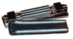
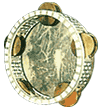
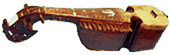
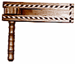
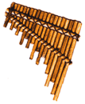

Rain Stick: Перкуссийный южно-американский инструмент в виде полой трубки из кактуса, заполненной мелкой галькой. Высота звука зависит от длины трубки.
Внутри - неровная структура и при вращении трубки галька перекатывается со звуком, похожим на шум дождя. Структура часто создается последовательностью тонких прутиков, расположенных по спирали по диаметру инструмента.
Согласно легенде, индейцы Чили создали rain stick, чтобы вызывать дождь.
Rubab (Rabob, Rubob): Азиатский струнный щипковый инструмент. Состоит из деревянного выпуклого кузова с кожаной декой.
Исполнитель на рубабе обычно аккомпанирует пению или танцам.
Внутри - неровная структура и при вращении трубки галька перекатывается со звуком, похожим на шум дождя. Структура часто создается последовательностью тонких прутиков, расположенных по спирали по диаметру инструмента.
Согласно легенде, индейцы Чили создали rain stick, чтобы вызывать дождь.

Reco-reco: Инструмент уходит корнями в музыку ранней индейской популяции в Бразилии. Изготавливается из таких разных материалов, как металл, бамбук, дерево и gourd. Характерный скрежет извлекают, водя палочкой по его поверхности. В северо-западной Бразилии изготовление и игра на reco-reco достигают уровня настоящего искусства.
Riq (Riqq, Reque): Мозаичный tamborine Среднего Востока. Латунные тарелочки расположены по корпусу двумя парами по две. Инкрустация по корпусу представляет собой настоящее произведение искусства.Rubab (Rabob, Rubob): Азиатский струнный щипковый инструмент. Состоит из деревянного выпуклого кузова с кожаной декой.

По форме и строению корпуса рубабы делятся на два типа: кашгарский и афганский (или таджикский). Струны из кишок, шелка или металла, обычно 4-6, причем часто 1-2 парные; некоторые разновидности рубаба с резонирующими струнами. Лады бывают неподвижными и навязными подвижными, существуют безладовые инструменты.Исполнитель на рубабе обычно аккомпанирует пению или танцам.

Rachet/Трещотка: Самозвучащий ударный музыкальный инструмент. Один из древнейших шумовых инструментов, распространенный у многих народов мира. Исторически, трещотки делали из дерева, сегодня существуют металлические и пластиковые инструменты.Repique (Repinique): Пуэрториканский барабан, который используют для импровизаций - по контрасту с держащим основной ритм - во время особых ритуалов или событий. В Уругвае он входит в семейство одноголовочных барабанов бочкообразной формы, известных как tamborils,- из числа основных народных инструментов.
Барабаны обычно 4 размеров, второй из меньших и называется repique.
Rondador: Национальный музыкальный инструмент Эквадора, разновидность флейты Пана.

Конструктивно близок antara и siku, состоит из одного ряда трубок, настроенных в пентатонику. Наиболее известный ритм, ассоциируемый с этим инструментом называется San Juanito. Настройки широко варьируются.Rondador исторически изготавливают из самого тонкого бамбука, во времена Инков для придания магической ауры и ритуального характера его украшали перьями из крыла кондора.
Помимо Эквадора встречается в северном Перу, благодаря чилийскому ансамблю Inti-Illimani приобрел популярность во всем латинском мире.